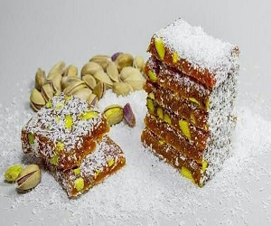
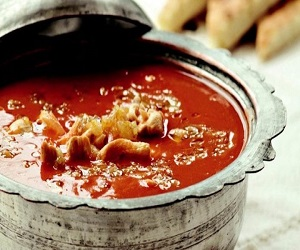
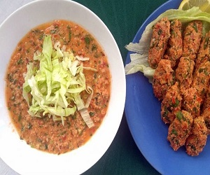
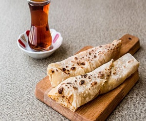

MERSİN LEZZETLERİ
TANTUNİ
Tantuni, şüphesiz Mersin’in sembollerinden biridir. Ortası çukur özel bir sacda sotelenen etin pişmesinin ardından, lavaşla ya da ekmek arası olarak servis edilir. Acı yemeyle ilgili bir sorununuz yoksa; tantuniyi, acı biber turşusuyla yemenizi ısrarla tavsiye ederim.
CEZERYE
Cezeryede havuç olmazsa olmazdır. Karanfil, zerdeçal, tarçın, zencefil gibi baharatların yanı sıra, Antep fıstığı ve ceviz de cezeryeyi tadına doyulmaz bir lezzet yapıyor. Lokumun en sağlıklı hali bu olsa gerek.

ARABAŞI ÇORBASI
Özellikle kış aylarında içilen Arabaşı çorbası, daha çok özel günlerde yapılır.Kış aylarında en çok yapılan çorbalardan olan yemek, genellikle beyaz etten yapılır. Yanına ayrı olarak undan yapılan meyane hamuru ile servis edilen çorba, bol acıyla ve limon suyuyla tüketebilirsiniz.

BİBERLİ EKMEK
Fındık lahmacunu andıran küçük biberli ekmeklerin hafif acımsı tadı, salçalı ve baharatlı iç harcı ve üstüne serpilen susam ile en leziz aperatifler arasındadır. Eğer biberli ekmekleri tadarken yanında ayran da içecek olursanız değmeyin keyfinize!
BATIRIK
Batırık, birçoğumuzun mercimek köftesi olarak bildiği yemeğin biraz daha farklı bir türü. Ana maddesi ince bulgur olan yemeğin, sıvı ve kuru olmak üzere iki çeşidi var. Fıstık, susam ve az miktarda tahinin de bulunduğu batırık, Mersin’de yaz aylarında en çok tüketilenler arasındadır.

SIKMA
Yörük kökenli bir atıştırmalık olan sıkma, genelde kahvaltıda tüketilen geleneksek bir lezzet. Açılan incecik hamur sacda pişirilir, hafif yağlıyken içine peynirli, çökelekli veya patatesli iç harcı eklenerek sarılır. Sıkılıp dürüm haline getirilen bu leziz aperatif sadece kahvaltıda değil her öğün ayran veya çay eşliğinde tüketebilirsiniz.
